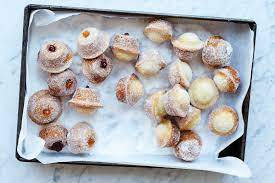

Mini Donut Muffin Recipe
Mini donut muffins are a very quick and easy bake. They are basically a cross between donuts and cake, and are filled with jam and covered with sugar.

Ingredients:
- 100g butter
- 75g caster sugar, plus extra for dusting
- 100g flour
- 1/2 tsp baking soda
- 50g natural yoghurt
- 1 egg
- 1 tsp vanilla extract
- 1 tbsp raspberry jam
- 1 tbsp apricot jam
- You will also need a 24 hole mini uffin tray and two disposable piping bags
- Preheat oven to 350 degrees farenheit. Melt the butter in the microwave or in a pan over medium hear and use a pastry brush to grease all the holes of the muffin tray with some of the melted butter.
- Place flour and baking sofda in a bowl and combine.
- In a small jug, mix the remaining melted butter with the yoghurt, egg, and vanilla. Pour the wet ingredients into the dry ingredients and gently fold them together until just incorporated.
- Divide the mixture among the 24 holes in the muffin tray using a teaspoon, then bake for 7-8 minutes or until golden brown and just risen.
- While the muffins are baking, spoon the jam into 2 piping bags and snip the end off each with a pair of scissors. Remove the hot doghnut muffins from the oven and roll them in caster sugar, then make a small hole with a skewer or toothpick in the bottom of each. Pipe raspberry jam into the centre of half of them and apricot jam into the other half. They are best enjoyed fresh from the oven.